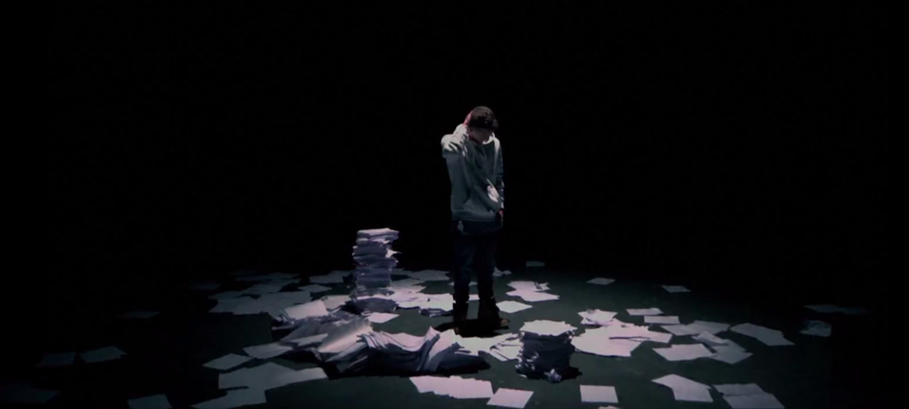

T Sessions is the stage name of rapper and composer Tom Sessions from Detroit, Michigan. Sessions endured a hardship-filled childhood in which his parents divorced, his mother's boyfriend physically abused him, and his mother eventually killed herself. Music was his escape, and he began recording songs on a karaoke machine, with instrumentals on one microphone and his raps in the other. Placing second in a nationwide Fine Arts Festival rap competition in 2008, and first in Michigan the following year, he independently released an EP, Shattered, in 2010. The album attracted the attention of Xist Music, which signed him to a recording deal in 2012, by which time Sessions had taken on the stage name T Sessions. The label announced the release of an album that same year, but it never appeared, and T Sessions and Xist parted ways. Sessions spent the next two years looking for a label and working with local producer Tommee Profitt in his studio; they came up with the song "Wake Up," which convinced Capitol Christian Music Group to sign him. CMG released a six-song (including a Manny Marroquin remix of "Wake Up") self-titled EP late in the summer of 2014. His debut album, 'Humbled.', was released in early 2015 and reached number 62 on the Billboard 200 while topping the Christian Albums chart. It topped the Christian Albums chart with its raw emotions and honest lyrics.
